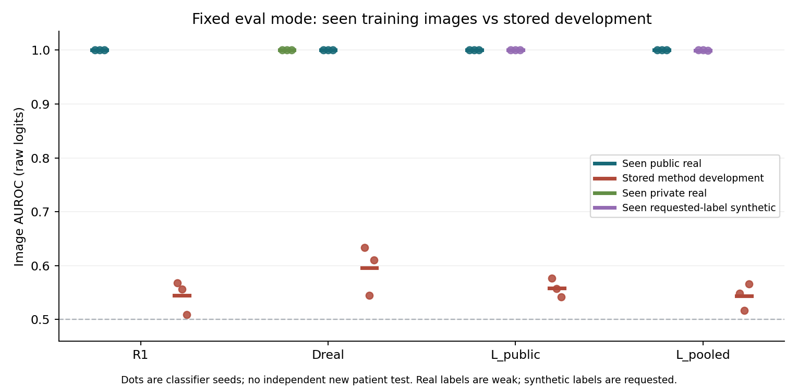
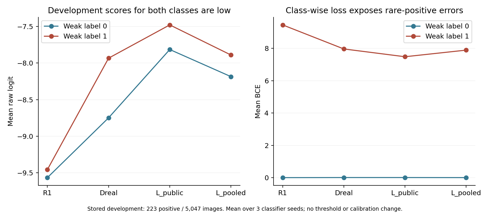

고정 분류기 진단: 학습자료에서는 거의 완벽하지만 개발자료에는 일반화되지 않았다
2026-09-17 KST. 진단에는 유의미한 결과다. 방법 효용의 음성 판정은 그대로이며, 공통된 학습–개발 일반화 차이를 직접 확인했다.
저장된 R1·Dreal·L_public·L_pooled의 12개 분류기를 변경 없이 평가했다. 실제로 본 실영상은 모든 모델·source에서 AUROC/AP 1.0이었고, 합성 요청 라벨도 AUROC 0.9990–1.0이었다. 반면 기존 개발 AUROC 평균은 0.5436–0.5962다.
즉 평가 모드에서 학습자료부터 구별하지 못하는 현상은 이번 검사에서 관측되지 않았다. 학습자료에서 얻은 구별 성능이 개발 실영상으로 충분히 이어지지 않는다는 사실은 확인됐다. 이를 분류기 과적합 하나의 인과적 증명이나 생성기 무관의 증명으로 해석하지 않는다.
새 학습·생성·DP는 모두0이다. Expert final532명과 reserved4,213명은 계속 닫아두었다. 기존 full64 및 고정 LoRA의 사적 추가 효용 미통과 기록도 변경하지 않았다.
1. 실행 전 범위와 실제 실행
사전 명세를 작성하고 checkpoint·trace·입력·코드를 실행 계약에 동결한 뒤 추론했다. 실행기는 기존 평가와 같은 증강 없는224 letterbox·ImageNet normalization·FP32·batch32·eval()·inference_mode()를 사용했다.
| 항목 | 범위 |
|---|---|
| 고정 checkpoint | R1, Dreal, L_public, L_pooled × seed11/23/37, 모두 기존400step |
| 학습자료 주 분석 | 해당 checkpoint의 실제 trace에 등장한 고유 영상만 |
| 전체 고유 학습영상 | 1,389장: 공개813·사적320·LoRA 합성256 |
| 모델별 학습영상 추론 합계 | 11,201회; 중복 제시 횟수가 아닌 각 모델의 고유영상 수 합계 |
| 기존 평가 경로 대응 | 저장 개발 순서의 첫64장 ×12모델 =768회 |
| 새 classifier image forward | 총11,969회; 새 모델 학습0 |
| 비교 개발자료 | 기존2,026명·5,047장 예측 재집계, 양성223장 |
| 원본 파일 범위 | 학습1,389장+개발 경로 검사64장=1,453개 허용 파일 |
모델별로 실제 학습에 등장한 공개 영상은 R1에서807/809/810장, 다른 세 arm에서788/778/783장이다. Dreal의 private320장, 두 LoRA arm의 해당 synthetic128장은 세 seed 모두 실제로 사용했다. 명부에 있었으나 해당 run에서 한 번도 추출되지 않은 영상은 제외했다.
이미 사용한 학습·개발자료를 다시 평가한 진단이며 새 독립 확인은 아니다. 원본 역할표와 사용 환자 범위를 재배정하지 않았다.
2. 동일 평가 경로의 결과
다음은 각 seed별 metric을 계산한 뒤 평균한 값이다. 개발 점수는 이전 실험과 같은 checkpoint의 저장 예측이다.
| 분류기 | 실제로 본 공개 real AUROC | 실제로 본 다른 source AUROC | 개발 AUROC | 개발 AP |
|---|---|---|---|---|
| R1 | 1.000000 | — | 0.544610 | 0.051669 |
| Dreal | 1.000000 | private real 1.000000 | 0.596172 | 0.078445 |
| L_public | 1.000000 | synthetic 1.000000 | 0.558234 | 0.052515 |
| L_pooled | 1.000000 | synthetic 0.999674 | 0.543587 | 0.052384 |
L_pooled의 synthetic AUROC는 seed11/23에서1.0, seed37에서0.999023이다. 대응 AP는1.0/1.0/0.999081이고, 평균0.999694다. 다른 학습 source의 AP는 모두1.0이다. 순위 판별력이 거의 완벽하다는 뜻이며 특정 threshold에서 모든 예측이 정확하다는 뜻은 아니다.

공개 학습 양성은 모델마다 같은6장뿐이다. 높은 학습 성능은 새로운 기흉 환자에 대한 성능 근거가 아니다. 합성영상128장 중 양성64장의 label도 요청 조건이므로, 이를 잘 구분했다는 사실로 실제 기흉 소견의 정확성을 주장할 수 없다.
AP는 양성 비율에 의존한다. 학습 public의 약0.7%, private의10.3%, synthetic의50%, 개발자료의4.42%가 다르므로, 학습 AP1.0 대 개발 AP 약0.05를 같은 모집단에서의 효과 크기로 계산하지 않는다. AUROC와 class별 loss를 함께 본다.
3. 낮은 학습 loss는 평가 모드에서도 유지됐다
| 분류기 | 학습 로그 마지막50step 평균 BCE | 공개 real의 고유영상 eval BCE | 다른 source eval BCE | 개발 BCE |
|---|---|---|---|---|
| R1 | 0.000166 | 0.000118 | — | 0.418000 |
| Dreal | 0.003938 | 0.001152 | private 0.002864 | 0.357736 |
| L_public | 0.004218 | 0.001673 | synthetic 0.016577 | 0.336252 |
| L_pooled | 0.004384 | 0.001236 | synthetic 0.013048 | 0.350774 |
로그 BCE는 각 학습 시점의 가중치, 증강된 balanced batch, train mode에서 얻은 값이다. 고유영상 eval BCE는 마지막 고정 가중치, 증강 없는 입력, 원래 고유영상 비율에서 측정했다. 둘이 수치적으로 같아야 한다고 요구하지 않는다.
그 차이를 고려해 실제 노출 횟수로 가중한 eval BCE도 저장했다. R1 public은0.0000924, Dreal public/private는0.000665/0.002408, L_public public/synthetic은0.000786/0.015745, L_pooled public/synthetic은0.000558/0.014874다. 이 가중치도 과거 증강·모드·시점까지 재현하지는 않는다.
따라서 현재 관측은 “로그에서만 loss가 낮고 고정 평가 경로에서는 학습자료조차 못 맞춘다”와는 다르다. 저장된 최종 분류기는 평가 경로에서도 학습자료를 매우 잘 구별한다.
4. 개발 양성에도 낮은 logit을 주는 공통 양상
| 분류기 | 개발 음성 평균 logit | 개발 양성 평균 logit | 개발 음성 BCE | 개발 양성 BCE |
|---|---|---|---|---|
| R1 | −9.5650 | −9.4550 | 0.000239 | 9.455126 |
| Dreal | −8.7486 | −7.9343 | 0.005994 | 7.966710 |
| L_public | −7.8165 | −7.4805 | 0.005814 | 7.484391 |
| L_pooled | −8.1864 | −7.8910 | 0.002089 | 7.893642 |
양·음성을 같은 비중으로 평균한 개발 BCE는 각각4.7277/3.9864/3.7451/3.9479다. 대부분이 음성인 개발자료에서 전체 평균 BCE만 보면 희소 양성의 큰 손실이 가려진다.

이 값은 새 threshold나 확률 보정의 성능이 아니다. 고정 raw logit과 weak label 사이의 현상을 기술한 것이다. R1에서 양·음성 평균 logit이 매우 가까우며, Dreal은 상대적 분리가 더 있지만 절대 개발 성능은 여전히 낮다.
5. 확인한 것과 아직 분리하지 못한 것
확인한 사실은 다음이다.
- 원본 파일과 학습 trace에 결속한 입력을 같은 평가 방식에 넣어도 학습자료의 높은 판별력은 유지된다.
- 두 LoRA 분류기는 합성 요청 label을 거의 완벽히 구별하지만, 개발 실영상에서 높은 기흉 판별력이나 사적 추가 효용을 보이지 않았다.
- 합성자료를 쓰지 않은 R1과 Dreal에도 큰 학습–개발 차이가 존재한다. 이 현상을 합성자료 하나에만 귀속할 수 없다.
- 기존 개발 순서 첫64장의 재추론 logit은12모델 모두 저장값과 bitwise exact였다. 평가 모드 누락이나 이번 재계산 경로의 불일치가 발견된 것은 아니다.
주원인은 아직 분리하지 못했다. 후보에는 공개 양성6장의 제한된 범위·반복, 개체/영상 특성 암기, train/development 자료 구성 차이, weak-label 차이, 증강·해상도·학습 recipe, 합성 요청 label과 실제 task 사이의 차이 및 그 상호작용이 있다. BatchNorm 통계가 바뀌지 않았다는 것은 이번 진단이 모델을 바꾸지 않았다는 증거이며, 기존 BN 통계가 최적이라는 증거는 아니다.
학습 성능이 높으므로 “기흉의 일반적 표현을 잘 학습했다”고 할 수 없고, 개발 성능이 낮으므로 “이전 대조는 전부 무효”라고도 할 수 없다. 기존 full64·LoRA 비교는 고정된 약한 downstream 설정에서의 음성 결과로 남는다.
6. 검산과 불변성
별도 검산기는 생산 metric/predict 함수를 import하지 않고 산술과 입력을 확인했다.
| 검사 | 결과 |
|---|---|
| 허용된 원본1,453개 SHA·독립 decode/letterbox | 기존 학습/평가 pixel hash와 전부 일치 |
| 실제 GPU 입력 | 별도 normalization 계산과 모든 배치 exact |
| 고정 개발 경로768개 예측 | 저장 raw logit과 exact, 최대차0 |
| 각 모델 parameter62개·buffer60개 | 실행 전후 모두 exact |
| BatchNorm running_mean/var/count | 12모델 모두60개 관련 buffer 불변 |
| trace의 patient/cell·label·source·노출 | 모든 실제 학습 slot 및 새 예측 명부 대응 |
| 독립 AUROC/AP/BCE | 최대 차이1.11×10⁻¹⁶ |
| 과거 checkpoint·trace·개발 예측·실패 문서 | 실행 계약 SHA 유지 |
325,916항목은 주로 학습 slot과 파일 연결의 무결성 검사 수이며, 성능 표본 수가 아니다. 새 환자 집합 재현, 전문가 판독, 인과 실험이 아니다.
추론·입력 검증 본 프로그램50.38초, 별도 검산33.96초다. 이는 코드 작성·검토·문서화 시간을 제외한 프로그램 시간이다. 두 과정에서 동일1,453개 파일을 한 번씩 decode했으며 고유 파일 범위가 늘어난 것은 아니다. 별도 검산의 GPU 연산은 입력 tensor 재구성이고 모델 forward는0이다.
7. 연구 판단
이번 검사로 공통된 일반화 차이를 확인했지만 해결책은 정하지 않았다. 현재 분류기들이 실제로 학습한 자료에서는 높은 판별력을 보이므로, 다음 판단은 이 학습자료의 제한된 구별 신호가 왜 개발 실영상으로 이어지지 않는지를 구분할 대조에 관한 것이다.
그 사실만으로 분류기를 교체하거나 BN을 재보정하면 해결된다고 할 수 없다. 또한 head·LoRA 실패를 취소하거나 기존 사적 추가 효용 gate를 완화하지 않는다. 추가 작업이 필요하다면 현재 기록에 근거해 자료 support 또는 학습·평가 조건 중 하나만 바꾸는 별도 개발 명세로 판단해야 하며, 이번 작업에는 새 대조 학습을 포함하지 않았다.
현재 실행은 완료했고 새 실험은 자동 선정하지 않았다. DP 확대 중단, expert final·reserved 보존, final_ready=false를 유지한다. 마지막 실제 방법 효용 결과는 고정 LoRA 미통과이며, 본 결과는 그 후속 고정 모델 진단이다.
근거: 집계·계약 hash·검산 기록, seed별 source metric, 실행 계약, 원 결과, 독립 검산.